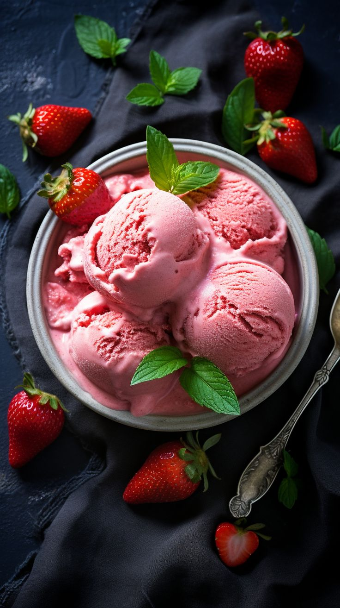

Molten Cake Recipe

Description:
Chocolate Molten Cake, also known as lava cake, is a decadent dessert with a rich, gooey center that oozes out
when cut into. It's perfect for special occasions or when you want to indulge in a luxurious treat.
Ingredients:
- 1/2 cup (1 stick) unsalted butter
- 4 ounces semisweet or bittersweet chocolate, chopped
- 1 cup powdered sugar
- Butter and cocoa powder (for greasing the ramekins)
Steps:
- Melt Butter and Chocolate
- Mix in Sugar
- Add Eggs and Vanilla
- Incorporate Flour